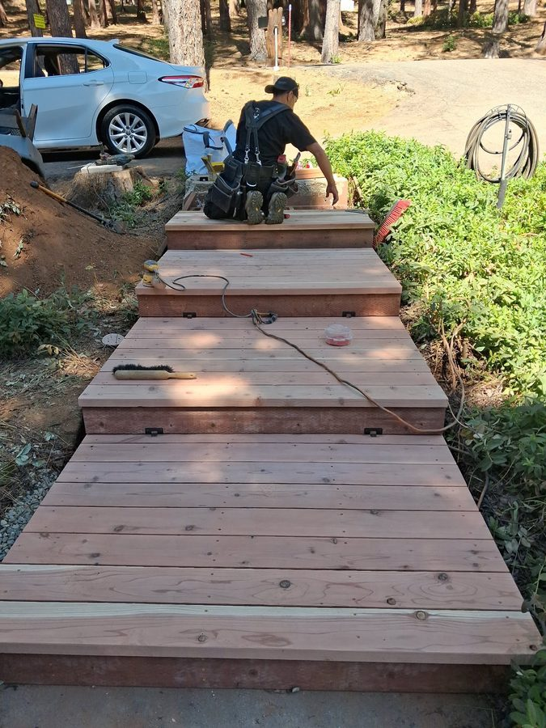

★★★★★
"Ian repaired our deck completely — replaced the rotted boards, posts, and stair stringers. Showed up on time every day, cleaned up after himself, and the deck is solid. Will absolutely use him again."
Mark R.
Pollock Pines, CA
Owner, carpenter, and the guy who shows up and gets it done right.

Ian Wright grew up with tools in his hands. Long before he started Wright Carpentry, he was the person neighbors called when something needed fixing or building. That reputation for showing up, doing quality work, and treating people fairly followed him into business.
Based in Pollock Pines, Ian works in the communities he knows — the Sierra foothills, the valleys below, and the neighborhoods that require a contractor who understands local terrain and conditions. He handles everything from finish carpentry and flooring to deck repair, retaining walls, dry rot, fencing, and general home maintenance.
Wright Carpentry is a hands-on operation. Ian is on the tools, not just on the phone. When you hire Wright Carpentry, you're getting Ian.
Get a Free Estimate →Ian doesn't rush. The detail work that most contractors gloss over — tight miters, flush fits, clean seams — is where Wright Carpentry spends its time.
You'll know exactly what the job costs before it starts. If something changes during the work, Ian tells you before acting, not after.
Ian lives here. He sees his work every day. That local accountability is built into every nail, board, and finish on every project he takes.
No middle management, no subcontracting the work. Ian is on every project — your home is never in the hands of someone he hasn't personally vetted.
Debris gets cleaned up at the end of each day. Your home isn't a construction zone — it's your space, and Ian respects that.
Wright Carpentry carries full liability insurance. You're protected, and so is your property.
"Ian repaired our deck completely — replaced the rotted boards, posts, and stair stringers. Showed up on time every day, cleaned up after himself, and the deck is solid. Will absolutely use him again."
"The finish carpentry Ian did in our home — crown molding, casings, baseboards throughout — is incredible. The level of detail is better than what we see in homes three times the price."
"Ian built a retaining wall on the back of our property and replaced the fence along the side. Both look great and he finished faster than estimated. Honest pricing, no games. Highly recommended."
Free estimate, no obligation. Ian will come out, walk the job, and give you a straight answer.